機能轉移｜圖像版
8個案例・19項文獻與證據。一圖一重點，點圖放大。
依來源重繪的解說示意；空間、人物與動作不是實測或田野紀錄。研究方法及限制放在每圖的「證據與界線」。
八個主要案例
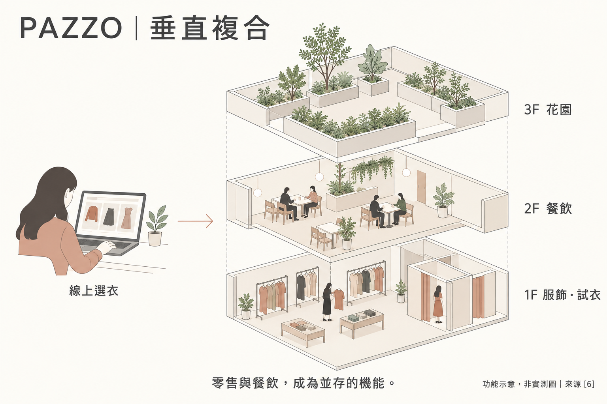
零售與餐飲，成為並存的機能。

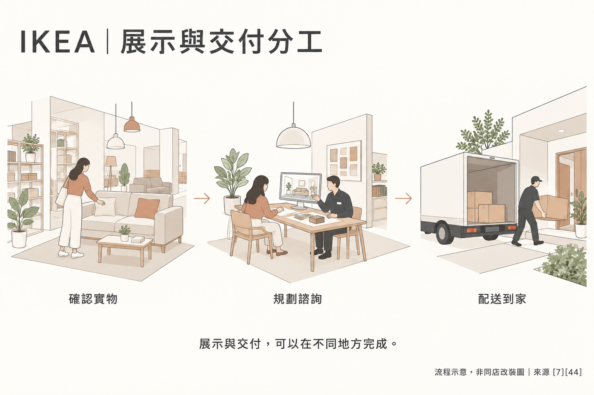
展示與交付，可以在不同地方完成。

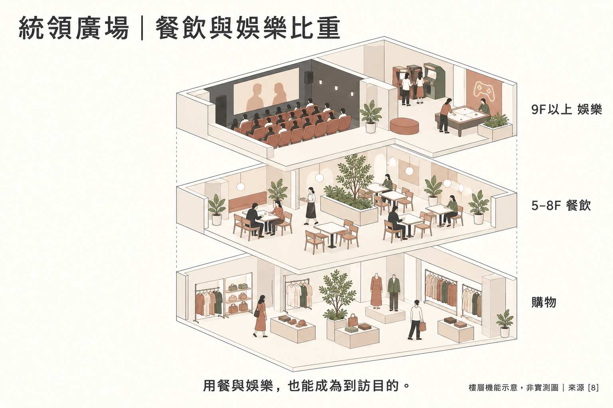
用餐與娛樂，也能成為到訪目的。

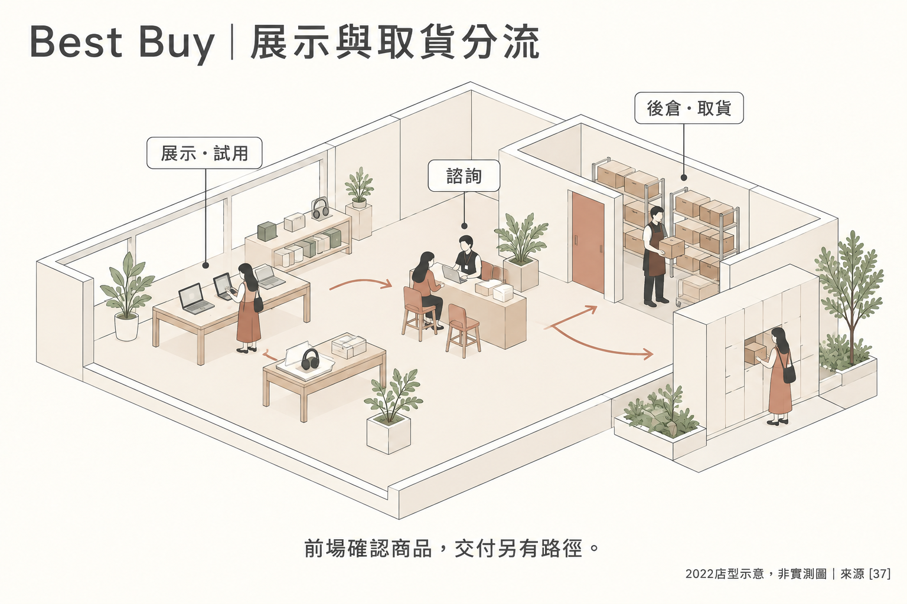
前場確認商品，交付另有路徑。

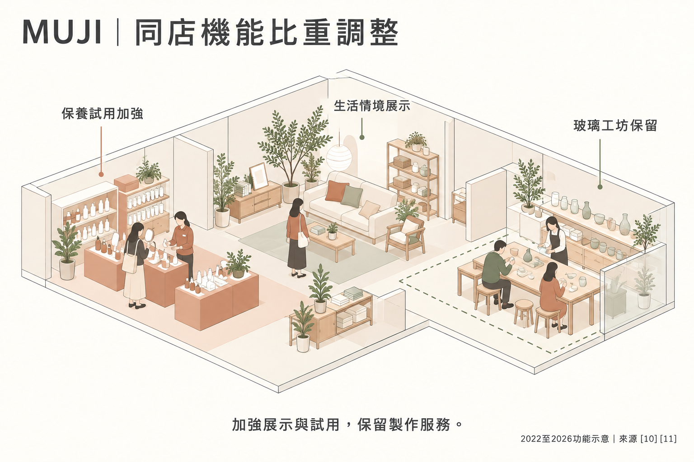
加強展示與試用，保留製作服務。

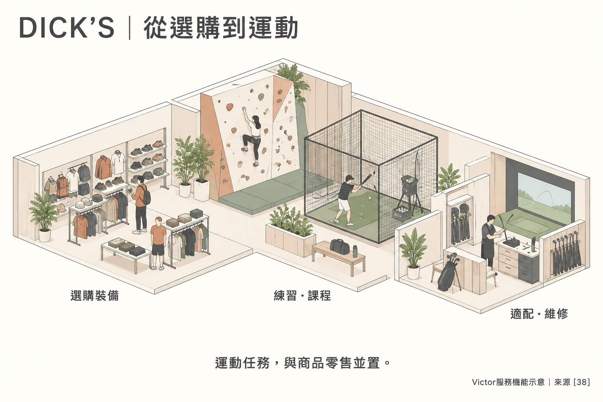
運動任務，與商品零售並置。

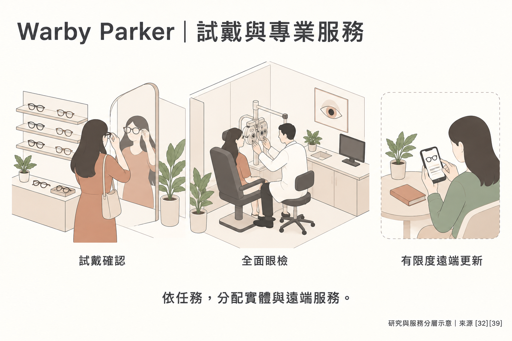
依任務，分配實體與遠端服務。

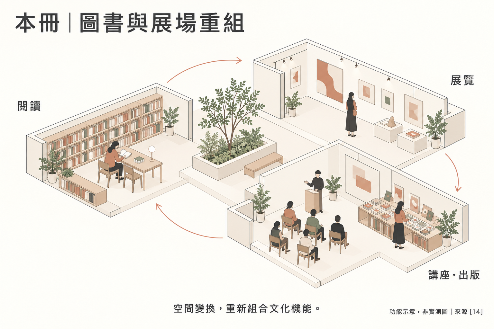
空間變換，重新組合文化機能。

文獻與證據
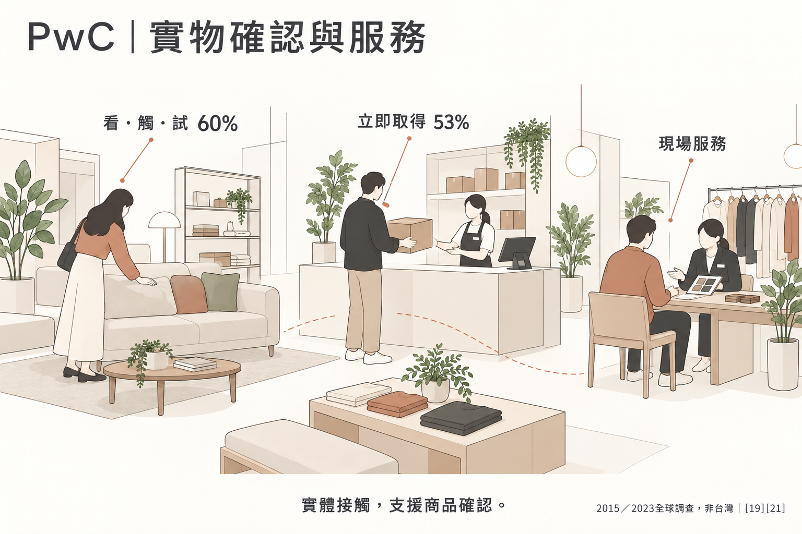
實體接觸，支援商品確認。

證據與界線
已補原始調查：PwC2015與2023 [19] [21] 原始PDF與精確定位 研究什麼： 2015版研究通路與店內購買理由，2023版追蹤通路使用及phygital體驗期待。 指出什麼： 2015圖3應讀為60%看／觸摸／試用、53%立即取得、33%確認合適；2023p.10顯示服務、數位工具與娛樂均有受訪者認為有吸引力。 支持什麼： 部分實體感官與服務需求、線上／實體互補，以及門市功能重配的研究方向；不是對「所有實體店不可替代」或改裝獲利的證明。 可用於設計： 以試用、諮詢、交付、自助及活動作不同任務，檢驗路徑與選擇；需求比例不能直接換算基地面積。 定位與界線： 請見下方 原始資料查核表 ，包含每項數字的印刷／閱讀器頁碼、問項、樣本與可用的論述句。
2015／2023全球調查，非台灣｜[19][21]
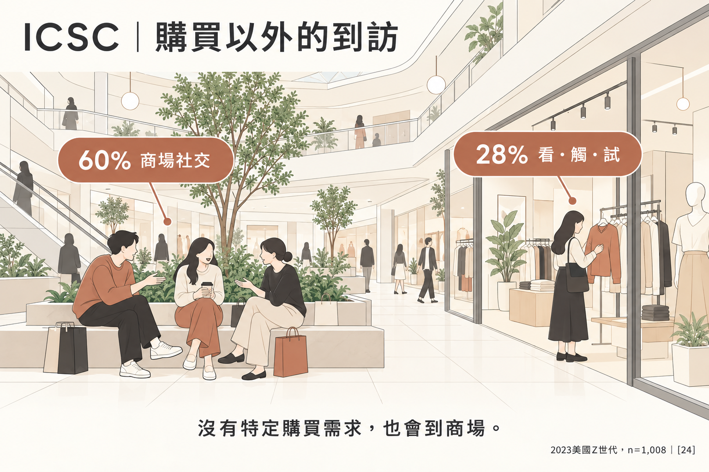
沒有特定購買需求，也會到商場。

證據與界線
ICSC《The Rise of the Gen Z Consumer》 [24] 2023 · 已補獨立原始調查 在研究什麼： Big Village為ICSC進行的美國Z世代（16–26歲）全國調查；2023-03-02至03-08，n=1,008。 指出什麼： 印刷p.5顯示97%會到實體店，28%到店的理由是看、觸摸或試用商品，5%為見到人／與人互動；印刷p.7顯示60%即使沒有特定購買需求也會到商場社交或與朋友見面；印刷p.6顯示43%把員工／店員或店內看商品列入影響購買的前三項。 支持什麼： 直接支持感官確認、非購買社交到訪與真人服務的研究方向；EasyStore未列原調查，不能認定ICSC就是其出處；本研究改採這份可核對的獨立原始調查，兩者問項不相同。 可用於設計： 把試用、觸摸、朋友會面與店員協助列為不同任務，設計可選擇的社交與安靜路徑；不能把美國樣本外推為台灣全體Z世代。
2023美國Z世代，n=1,008｜[24]
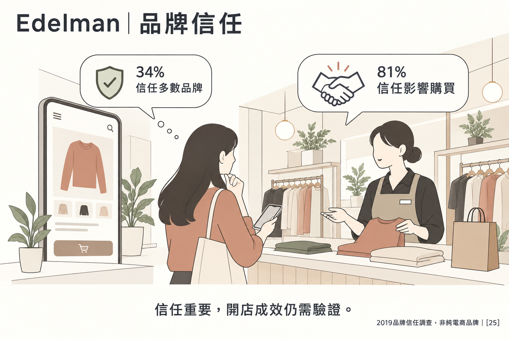
信任重要，開店成效仍需驗證。

證據與界線
Edelman《In Brands We Trust?》 [25] 2019 · 原始調查摘要 在研究什麼： 2019 Edelman Trust Barometer Special Report，8國16,000人對品牌信任與購買關係的調查。 指出什麼： 官方摘要指出，只有34%信任自己購買／使用的大多數品牌；81%把品牌信任視為購買時的決定因素或必要條件。 支持什麼： 支持將信任視為商業空間研究變項，但它問的是一般品牌信任，不是「純線上品牌」；不能拿34%驗證EasyStore的三分之一說法，也不能證明實體店造成信任。 可用於設計： 將真人協助、試用、售後說明、品牌透明度列為可觀察的信任線索，透過訪談或行為紀錄測試。
2019品牌信任調查，非純電商品牌｜[25]
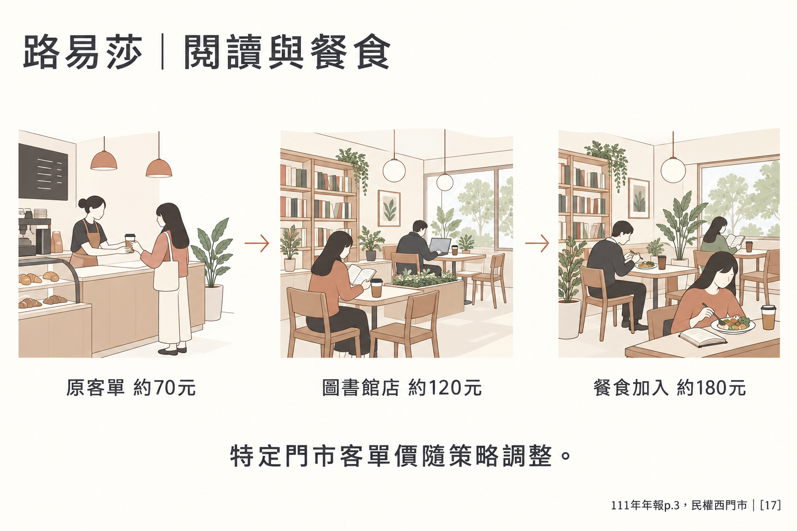
特定門市客單價隨策略調整。

證據與界線
路易莎官方《111年年報》：補回原有缺漏 [17] 2022年度 · 原PDF與關鍵段落已核對 在記錄什麼： 咖啡集團的展店、餐食、會員與門市／供應鏈策略；區分年度事實、管理層自述與未來計畫。 指出什麼： 印刷p.3／PDF第11頁：台北民權西店定位為圖書館門市後，客單價約70→120元，推出精選餐食後約180元；同頁寫160多萬黑卡會員。p.49／PDF第57頁寫168萬、空間調整與App快速取餐；p.57／PDF第65頁說明MES生產、叫貨、排班與BI分析。 支持什麼： 支持特定咖啡店的閱讀／工作／聚會場景、餐食與數據流程擴展；大店與外帶小店分流也見p.2、p.57。這些是報告當時的企業資料，不是2026現況。 可用於設計： 分開研究久坐閱讀／餐食、快速外帶、取餐與後場補給；以座位使用、桌面任務、排隊、聲音與人力驗證相容性。 引用界線： 70→120→180僅指民權西門市，未公布觀察期間、樣本與客單價公式；菜單與空間同時調整，不能將變化全歸因於設計。160多萬與168萬依原頁保留；GPT語音點餐屬年報描述的開發／導入計畫，不寫成已全面上線。
111年年報p.3，民權西門市｜[17]
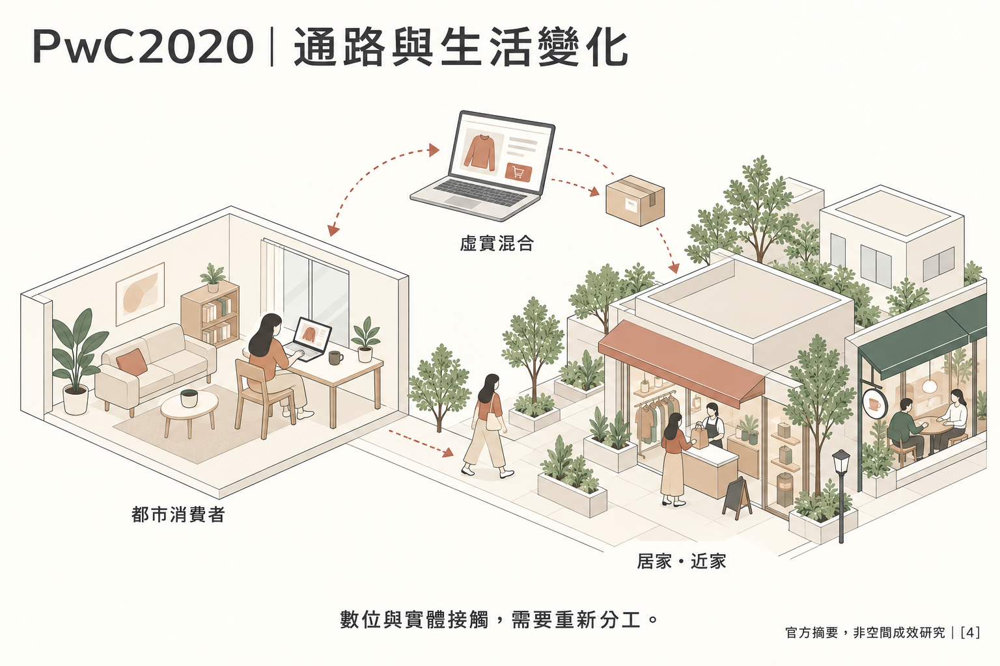
數位與實體接觸，需要重新分工。

證據與界線
PwC《2020全球消費者洞察報告》官方摘要與二手對照 [4] 官方摘要已補 · 全文未取得 在研究什麼： 官方摘要確認以兩次不同研究調查疫情前後都市消費者的行為；沒有把它當成同一群人的追蹤。 指出什麼： 官方將數位趨勢加速、居家／近家體驗、虛實混合及數位資源差異列為企業應回應的議題；這些是研究機構分析與建議，非空間改裝成效。 支持什麼： 提供歷史背景與通路／體驗整合的解釋，不能證明2026台灣門市的不可替代性；較直接的通路比例改用已讀的2015／2023原PDF與2026政府統計。 可用於設計： 比較到店、居家與遠端服務如何分配任務，並調查數位使用門檻。 界線： 已補官方2020摘要，全文下載連結本次回傳一般頁面，未取得PDF；二手報導的食品35／60%不再作核心支持，也不與2015觸摸60%混用。
官方摘要，非空間成效研究｜[4]
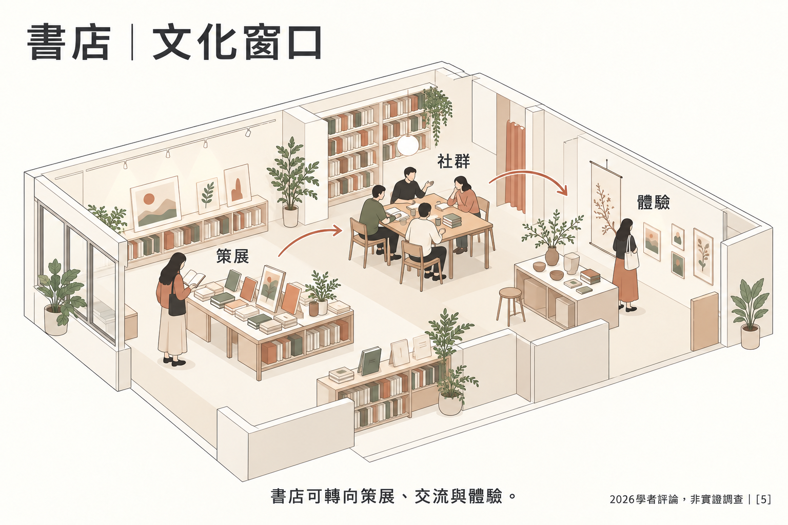
書店可轉向策展、交流與體驗。

證據與界線
〈價值創新 書店轉型文化窗口〉 [5] 2026 · 學者評論 在討論什麼： 林文寶教授分析書店在數位消費環境下的價值定位。 指出什麼： 提出策展力、社群連結與體驗再造，主張門市應創造網路難以複製的價值，並以第三空間解釋交流與歸屬。 支持什麼： 提供從商品交易轉向策展、交流及文化服務的理論性解釋；不是經測量證實所有書店都達成社會作用。 可用於設計： 設定閱讀、策展、交流三種使用條件，檢驗布局及規則能否同時支持獨處與參與。此為設計轉譯。 界線： 署名評論，沒有樣本、實驗或因果模型；「演算法無法複製」屬作者主張，不當作對所有線上服務的科學結論。
2026學者評論，非實證調查｜[5]
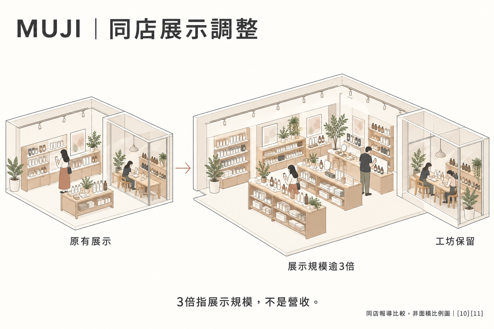
3倍指展示規模，不是營收。

證據與界線
MUJI美麗華改裝與玻璃工坊紀錄 [10] [11] 同店時間比較 · 配置證據 在記錄什麼： 2021年的報導預告與春池玻璃合作的工坊；2026年的報導記錄同門市改裝，並指出工坊、刺繡、咖啡等服務保留。 指出什麼： 2026門市約600坪，美容保養區約68坪；臉部保養展示提升至原本3倍以上。同時增加試用、香氛與生活情境配置。 支持什麼： 具體支持同一門市調整機能比重，且零售能容納製作及服務；展示的擴充不等於商品交易消失。 可用於設計： 比較貨架、試用、製作、回收與結帳的接鄰關係，再測試補貨、清潔、噪音與候位。是目前較適合深化的案例。 界線： 品牌資料及新聞紀錄，不是獨立成效研究；逾3倍指展示規模，不是營收、參與率或忠誠度。
同店報導比較，非面積比例圖｜[10][11]
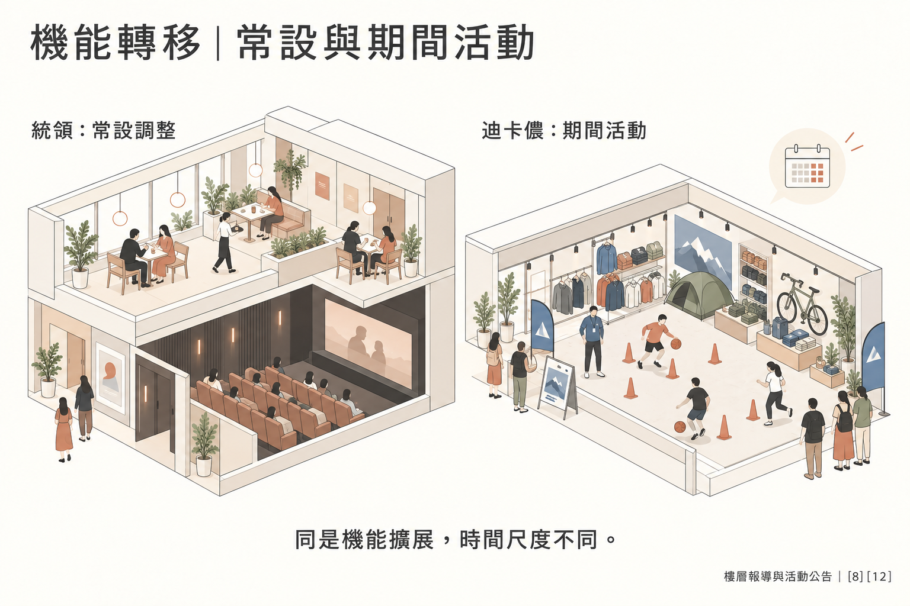
同是機能擴展，時間尺度不同。

證據與界線
統領廣場與迪卡儂門市活動紀錄 [8] [12] 2026 · 常設與期間機能 在記錄什麼： 統領的租戶／樓層調整，以及迪卡儂的限定期間運動活動。 指出什麼： 統領5–8樓規劃餐飲、9樓以上引進遊樂場及影城；迪卡儂規劃9間門市、3個週末的免費登記闖關。 支持什麼： 商業據點可以提供用餐、觀影、運動等到訪目的；機能轉移也有不同時間尺度。兩者不應視為同一種永久改裝。 可用於設計： 常設服務需處理不同流線；短期活動需處理收納、場地切換、安全與不參與者的通行。 界線： 沒有非購買到訪比例、活動實際人數或同店財務前後比較。提供活動，不等於證明民眾的動機與長期社群效果。
樓層報導與活動公告｜[8][12]
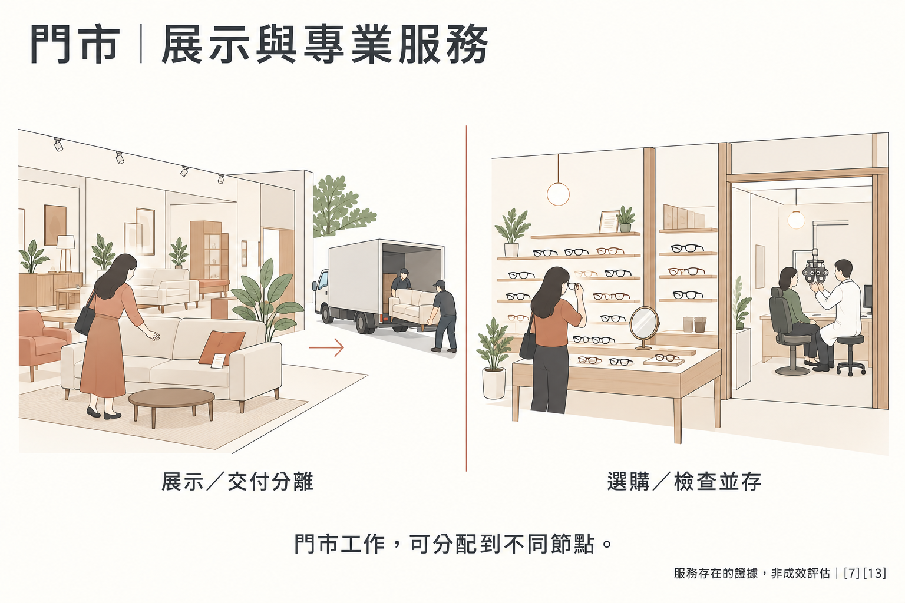
門市工作，可分配到不同節點。

證據與界線
IKEA城市展示店與Warby Parker服務案例 [7] [13] 流程與服務存在的證據 在記錄什麼： 展示與現場交付分開的IKEA店型，以及眼鏡銷售與視光服務並存的Warby Parker。 指出什麼： 報導提到IKEA曼哈頓店展示商品但不能當場帶走；Warby Parker則有眼睛檢查與視力測試服務。 支持什麼： 門市的工作不只靠現貨陳列／結帳完成，可以重分配展示、交付與專業服務。 可用於設計： 設計「不同任務、不同路徑」：看展示、諮詢、檢查、取貨各自有入口或分流，並評估仍需共用的候位與後場。 界線： 主要仍可能服務商品選購。沒有每店平面和同店歷史變化，不能直接論證到店完全脫離購買。
服務存在的證據，非成效評估｜[7][13]
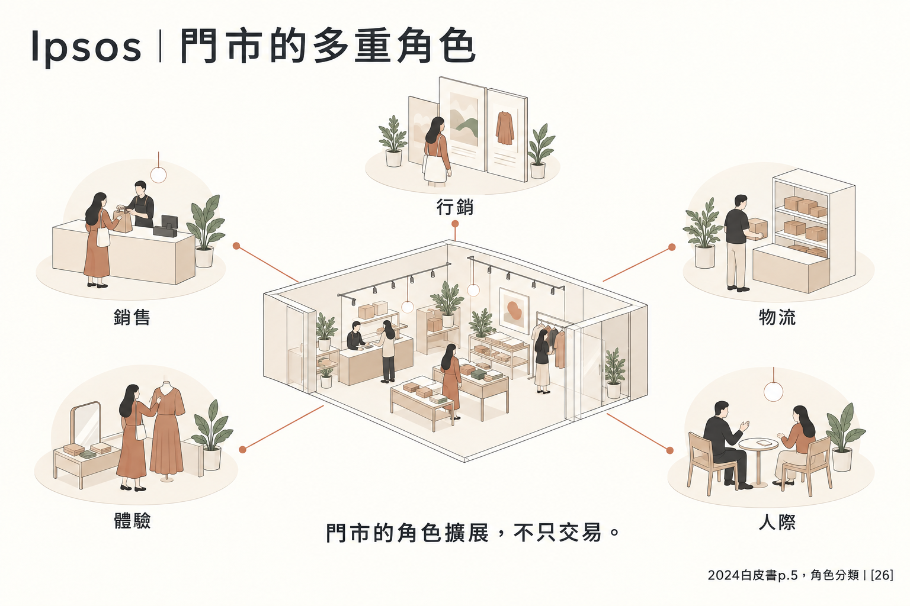
門市的角色擴展，不只交易。

證據與界線
Ipsos《實體店轉型：虛實融合新零售》 [26] 2024中文版 · 產業白皮書全文 在研究什麼： 實體門市在虛實整合中的角色、體驗、物流與人際服務。官方中文版已取得，並非只讀網誌摘要。 指出什麼： 印刷p.5／PDF第3頁列銷售、行銷、物流、體驗、人際交流五類角色；p.6–7／PDF第4頁討論店取、退換貨、回收、補充與感官服務；p.12–13／PDF第7頁指出應依角色調整衡量指標。 支持什麼： 直接提供「機能重新分配」的分類依據：交付可移出前場，也可能增加取退貨與後場工作，不只增加休憩與展覽。 可用於設計： 將基地各區標為展示、操作、諮詢、交付／退貨、補給、活動及休息；比較面積、時段、人力與服務量。 界線： 產業分析與案例整理，不是同儕審查的因果研究；文中未完整提供方法的跨報告百分比不採用，也不將舊預測寫成2026事實。
2024白皮書p.5，角色分類｜[26]
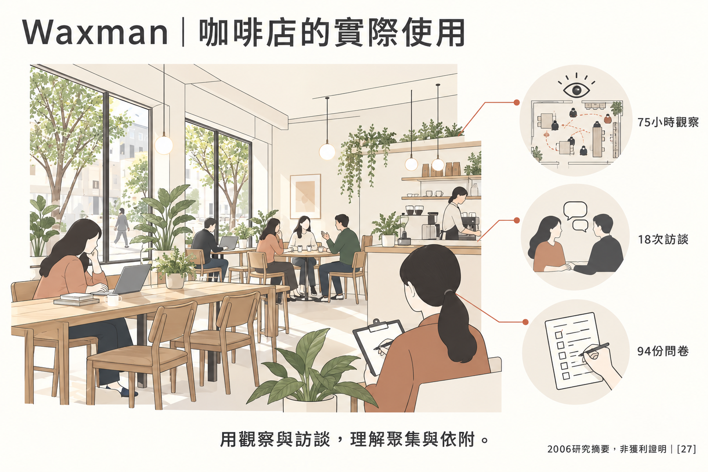
用觀察與訪談，理解聚集與依附。

證據與界線
Waxman〈The Coffee Shop〉：咖啡店如何被使用 [27] 2006 · 同儕審查 · 出版者登錄摘要 在研究什麼： 哪些物理與社會特性鼓勵聚集、並與場所依附相連。3間咖啡店各觀察25小時，共75小時，搭配行為圖、18次訪談及94份顧客問卷。 指出什麼： 摘要列出的五項設計考量為清潔、香氣、充分照明、舒適家具與外部景觀；社會主題包括歸屬、領域／所有感、生產力、社交及支持。光顧時間長度與社區依附感呈正相關。 支持什麼： 支持咖啡空間的實際使用與身體／社會條件值得研究；比僅有「裝潢漂亮」的介紹更能建立觀察項目。 可用於設計： 建立座位與活動行為圖，記錄讀寫、獨處、交談、停留與移位；把照明、桌面、座椅與外部視線列為待測的條件。 界線： 小型場所研究；本次未取得全文，只採用摘要明列的方法與結果。不證明某項裝修造成獲利，也不能把2006結果當作當代台灣盛行率。
2006研究摘要，非獲利證明｜[27]
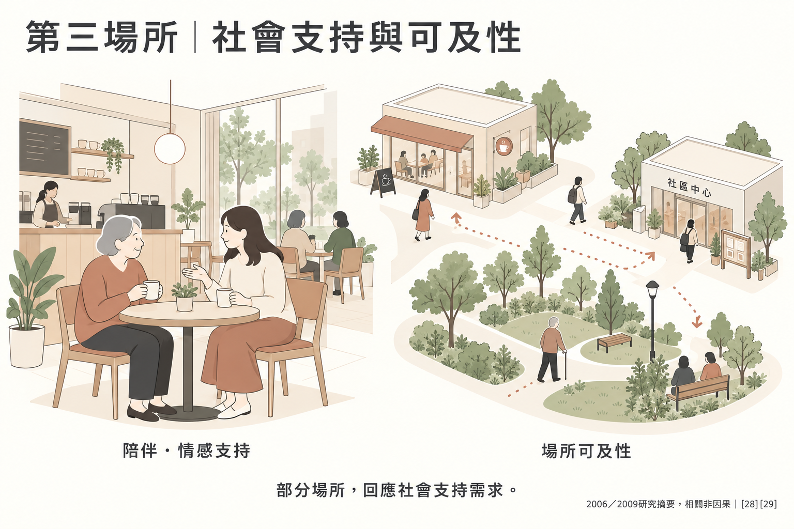
部分場所，回應社會支持需求。

證據與界線
Rosenbaum與Jeffres：社會支持與社區作用 [28] [29] 2006／2009 · 同儕審查 · 摘要已讀 在研究什麼： Rosenbaum以紮根理論與社會支持量表研究商業第三場所；Jeffres等以美國全國調查研究第三場所可及性感受與社區生活品質感受。 指出什麼： 部分顧客到餐館、咖啡店與酒館尋求陪伴和情感支持，尤其經歷關係流失的年長者；商業友誼獲得支持的頻率與忠誠相關。另一研究發現可及性感受與生活品質感受相關，場所包括商場、咖啡店、公園及社區中心。 支持什麼： 支持「有些到訪回應購買以外的需求」與「場所可能具社會作用」。社會作用並非商業空間獨占。 可用於設計： 調查固定回訪、熟識關係、可負擔進入與不消費停留；觀察單人、熟人群與店員互動，保留可選擇的交流。 界線： 本次兩篇摘要未列完整樣本量，不造數；相關不等於因果。不能由提供座位直接推論減少孤獨或改善幸福。
2006／2009研究摘要，相關非因果｜[28][29]
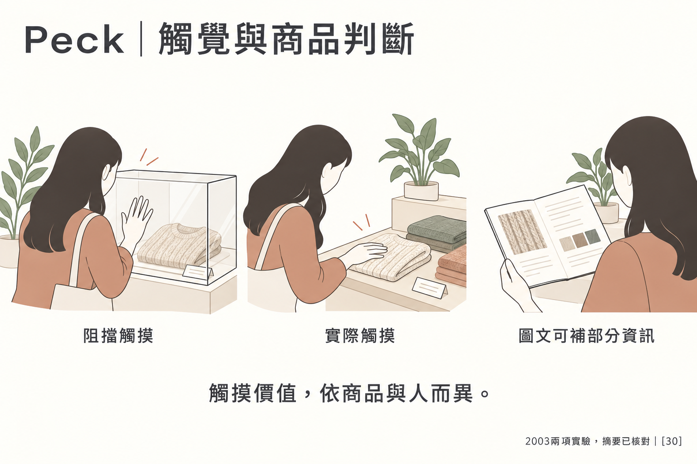
觸摸價值，依商品與人而異。

證據與界線
Peck與Childers：觸摸在哪些情況具有價值 [30] 2003 · 同儕審查 · 出版者登錄摘要 在研究什麼： 觸覺資訊如何影響商品判斷；兩項實驗比較商品材質、消費者觸摸動機與情境。 指出什麼： 質地、硬度、溫度與重量的資訊可影響判斷；展示櫃等阻擋觸摸的條件會降低高觸摸需求者的評估信心、增加挫折。文字與視覺能補足部分觸覺資訊。 支持什麼： 支持可操作、可觸摸的展示作為部分任務需求；同時限定「不可替代」不能擴張成所有商品都必須到店。 可用於設計： 比較封閉展示與自助操作，測量任務理解、需要求助與選擇信心；測試同時提供圖文、材質樣本與真人協助。 界線： 摘要未列樣本量或效應量，不補造。送樣到府也可能提供觸摸，身體接觸的價值不等於固定門市是唯一解。
2003兩項實驗，摘要已核對｜[30]
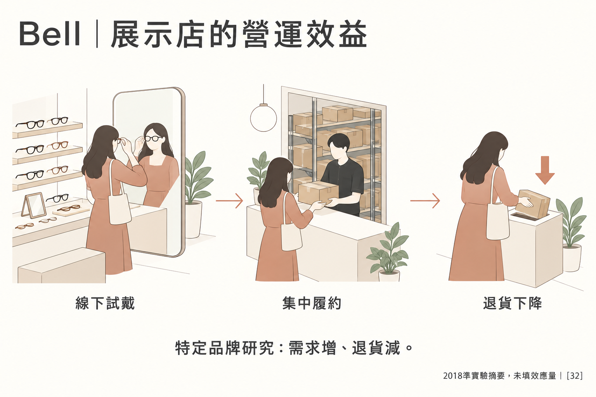
特定品牌研究：需求增、退貨減。

證據與界線
Bell、Gallino與Moreno：展示店的營運效益 [32] 2018 · Management Science · 準實驗摘要 在研究什麼： Warby Parker開設線下展示店、結合線上履約與集中庫存，對需求與營運效率的影響。 指出什麼： 期刊摘要說明使用展示店開設的準實驗資料：整體與線上需求增加、試用通路轉換改善、退貨下降，且效果隨品牌／通路認知累積。 支持什麼： 比公司總營收更直接支持「現場確認＋通路分工」可在特定品牌帶來營運效益；仍不是任意空間設計的普遍成效。 可用於設計： 把試戴／諮詢與下單／交付分開；以商品適配確認、退貨、服務時間及通路使用作設計驗證指標。 界線： 本次讀到期刊摘要，未取得全文中的識別細節、樣本及效應量，因此不自行填入百分比；不能外推為社交場域、所有店型或當前驗光服務的因果效果。
2018準實驗摘要，未填效應量｜[32]
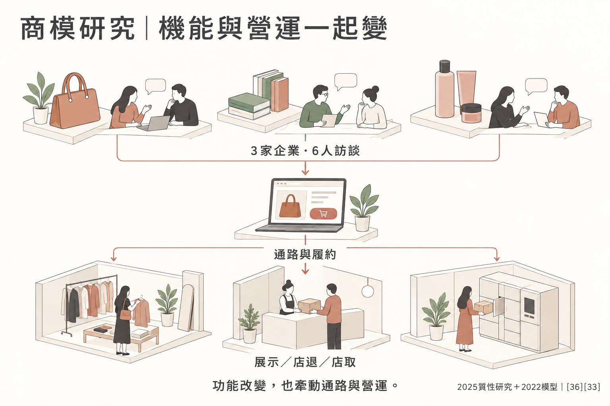
功能改變，也牽動通路與營運。

證據與界線
近期商模研究：小型零售商與門市功能 [36] [33] 2025實證全文／2022模型摘要 在研究什麼： Baldivia與Chowdhury以3家澳洲小型零售商、6位訪談者分析全通路轉型；Gao、Agrawal與Cui以數學模型比較展示、網購店退與網購店取的門市數量／規模。 指出什麼： 2025期刊全文p.8–9說明收集與分析，p.10–19比較皮包、書籍、美妝，p.22–24討論瓶頸與限制；轉型牽涉通路、價值主張、履約與能力，也可能執行不完整。2022模型指出取消交付或增加退取貨功能，在不同條件下會改變門市數量與大小。 支持什麼： 支持「經營方式與機能一起變」；也反駁固定的「一定減少貨架、一定大店化、一定成功」公式。2025是期刊年份，訪談背景含疫情封城，不能說受訪於2025。 可用於設計： 以商品／服務、通路、收入、人力、庫存與返回流程建立前後比較；先處理查詢、退貨與候位瓶頸，再決定是否需要互動設備。 界線： 小樣本質性研究不能推估產業比例；數學模型給出條件性結果，不是店家實測。兩者也不能直接證明台灣基地適合某個面積比例。
2025質性研究＋2022模型｜[36][33]
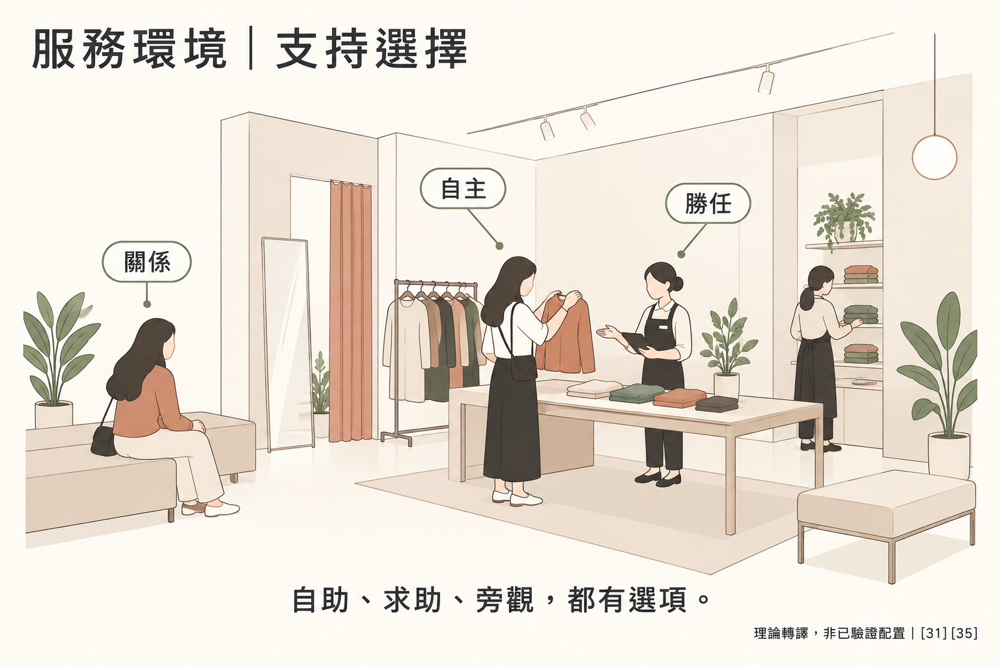
自助、求助、旁觀，都有選項。

證據與界線
Servicescapes與自我決定理論：空間與選擇 [31] [35] 1992摘要／2000全文 · 理論框架 在研究什麼： Bitner提出服務環境如何影響顧客與員工行為的概念框架；Ryan與Deci整合自主性、勝任感、關係需求與動機的研究。 指出什麼： Servicescapes要求同時關注顧客與員工的環境；Ryan與Deci全文印刷p.68／PDF第1頁列三種基本需求，p.70／PDF第3頁討論選擇、感受被承認與自我引導機會。 支持什麼： 使「自主參與」有理論依據，也讓營運者補貨、清潔、協助的路徑納入設計；這是解釋與假設框架，不是門市轉型成效的直接測量。 可用於設計： 設置自助／求助雙選項、可旁觀但不妨礙操作的邊界、安靜座位及清楚退出路徑；同時驗證員工負荷與服務完成。 界線： 自我決定理論全文已取得，但不是商業空間專項實驗。從心理理論到家具、動線及規則仍需原型測試。
理論轉譯，非已驗證配置｜[31][35]
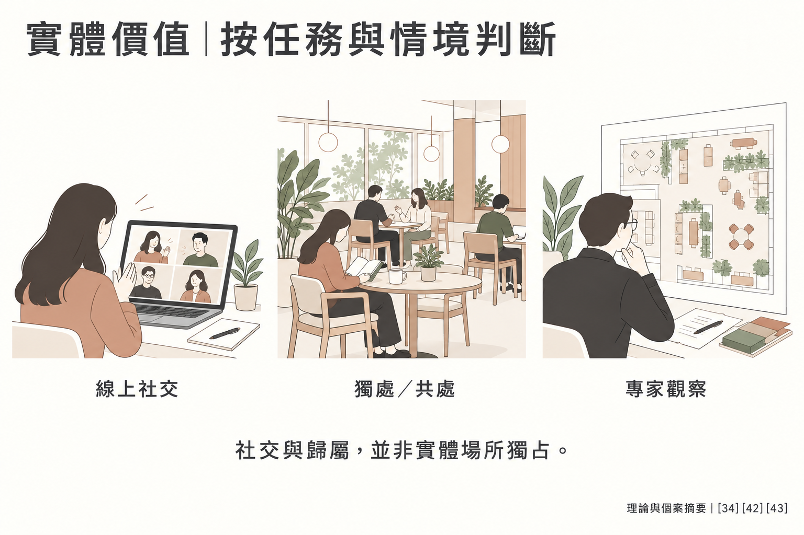
社交與歸屬，並非實體場所獨占。

證據與界線
限制與比較：線上社交、獨處，以及專家觀察 [34] [42] [43] 2006／1991／2020 · 摘要與機構說明 在研究什麼： Soukup討論虛擬第三場所的成立條件；Shapira與Navon以特拉維夫咖啡店說明私密／公共、獨處／共處的變動；Alexander與Blazquez Cano以20位產業專家訪談探討全通路實體空間。 指出什麼： 第三場所概念亦可用於線上溝通；咖啡店的空間邊界與使用感受具有情境性。時尚零售空間的研究另把通路、店內經驗與設計條件連結。 支持什麼： 把論述改成「何種任務、情境與人群需要實體」，而非把溫暖、意外發現、社交全寫成線上不可能；聚在一起也可能是在獨處。 可用於設計： 比較現場與遠端諮詢、單人／群體座位、可選擇互動的空間；把可及性、費用、時間與任務品質列入比較。 界線： 虛擬第三場所是理論分析；歷史咖啡店為個案，不能外推文化。Alexander文僅取得作者機構摘要，20位是專家而非顧客，全文仍受限。
理論與個案摘要｜[34][42][43]
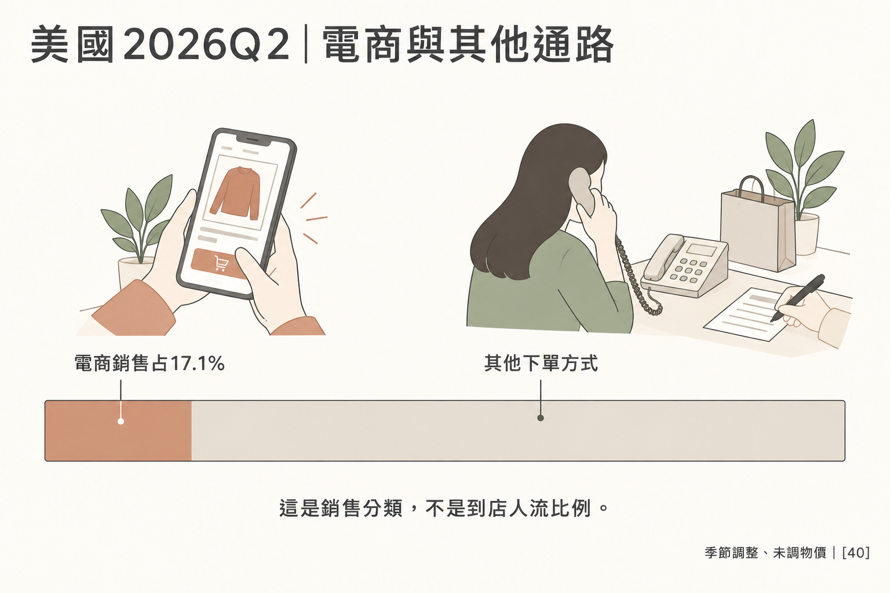
這是銷售分類，不是到店人流比例。

證據與界線
現今背景：美國2026第2季零售電子商務 [40] 2026-08-18 · 政府統計全文 在研究什麼： 美國人口普查局按季估計零售總銷售與電子商務銷售。 指出什麼： 本次讀取的2026第2季報告p.1：經季節調整、未調物價的電子商務占總銷售17.1%，年增12.2%；總零售年增6.7%。 支持什麼： 電子商務持續成長，與其他下單方式並存；為問題背景提供近期官方資料，不把所有商店一律描述為衰退。 可用於設計： 作為通路整合的背景，不將全國交易比例換算成基地配置。台灣或基地的客流與需求仍應另查。 界線： 美國非台灣，且電子商務按下單方式分類，實體店企業也可能接網單；其餘82.9%不是「到店人流占比」。官方current.pdf會更新，本頁採2026-10-06下載、標示2026Q2的版本。
季節調整、未調物價｜[40]
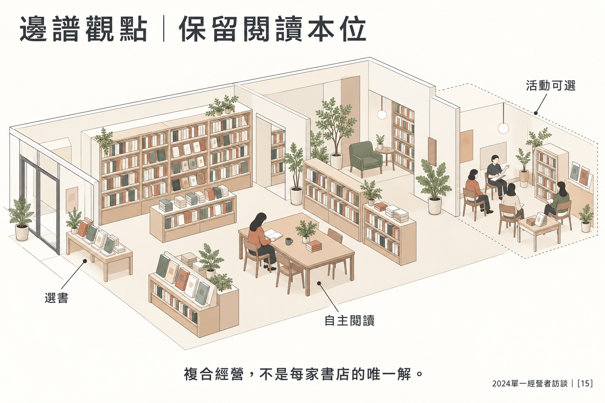
複合經營，不是每家書店的唯一解。

來源
沿用研究頁編號，同一來源不重複列項；全文與摘要的讀取層級可回研究頁核對。
- PwC，Global Consumer Insights Survey 2020官方摘要；倡議家二手報導對照。https://www.pwc.com/id/en/industry-sectors/consumer-industrial-products-services/consumer-insights-survey.htmlhttps://ubrand.udn.com/ubrand/story/123660/4734482
- 林文寶，〈市場觀察室／價值創新 書店轉型文化窗口〉https://udn.com/news/story/7241/9405540
- udnSTYLE／Marie Claire，〈Pazzo首間實體店將開幕！1F熱賣服裝、2F Brun早午餐、3F超美空中花園〉https://style.udn.com/style/story/8077/6630547
- 社企流／倡議家，〈IKEA幫地球降溫，不提供車位—請搭車來逛減碳排〉https://ubrand.udn.com/ubrand/story/123637/4367094
- 仝澤蓉，〈電商衝擊傳統零售 百貨業拚體驗經濟轉型〉https://udn.com/news/story/7241/9539438
- 黃冠婷，〈全台最大MUJI美容保養賣場開幕！600坪新店型＋最大保養區正式登場 美麗華門市升級亮點一次看〉https://woman.udn.com/woman/story/123164/9407121
- 劉小川，〈實際體驗玻璃回收與DIY！MUJI無印良品與春池玻璃首度合作 打造全台唯一玻璃工坊〉https://500times.udn.com/wtimes/story/123911/5983778
- 迪卡儂／琅琅悅讀，〈經典綜藝《百戰百勝》復刻 迪卡儂打造全台最大運動場 體壇國手、知名藝人跨界對決〉https://reading.udn.com/read/story/122858/9548283
- B型企業協會 B Lab Taiwan／倡議家，〈眼鏡公司「買一捐一」再送眼科服務給弱勢 為何員工、客戶超買單？〉https://ubrand.udn.com/ubrand/story/123651/8068469
- 沈佩臻，〈2022 ZINE術祭濕地venue11月登場！齊聚本冊圖書館、好初漫報、Xavia Chen等百組小誌創作〉https://500times.udn.com/wtimes/story/12672/6701948
- 光怪，〈書店再見，再見書店／「閱讀風氣不彰，才更要開書店」：專訪邊譜書店負責人廖英良〉https://reading.udn.com/read/story/7044/7846941
- 路易莎職人咖啡，《111年年報》https://www.louisacoffee.co/upload/shareholder/20231129_073651.pdfhttps://www.louisacoffee.co/shareHolder/5
- PwC，《Total Retail 2015: Retailers and the Age of Disruption》https://www.pwc.com/sg/en/publications/assets/total-retail-2015.pdf
- PwC，《February 2023 Global Consumer Insights Pulse Survey》https://www.pwc.com/gx/en/consumer-markets/global-consumer-insights-survey-2023-01/feb-2023-global-consumer-insights-survey-pulse-5-pwc-global.pdf
- ICSC，《The Rise of the Gen Z Consumer: Career-Driven, Credit-Averse and Tempted by Immersive Retail》https://www.icsc.com/uploads/about/2023ICSC_Gen_Z_Report.pdf
- Edelman，《In Brands We Trust?》／2019 Edelman Trust Barometer Special Reporthttps://www.edelman.com/news-awards/only-one-third-of-consumers-trust-most-of-the-brands-they-buy
- Chaltas、Goldring、Wilson與Leavy，Ipsos《實體店轉型：虛實融合新零售》https://www.ipsos.com/en-tw/The-Morphing-Storehttps://www.ipsos.com/sites/default/files/ct/publication/documents/2024-05/N196_MSU_The_Morphing_Store_CHN_2.pdf
- Waxman, L. (2006). The Coffee Shop: Social and Physical factors Influencing Place Attachment.https://doi.org/10.1111/j.1939-1668.2006.tb00530.xhttps://api.crossref.org/works/10.1111%2Fj.1939-1668.2006.tb00530.x
- Rosenbaum, M. S. (2006). Exploring the Social Supportive Role of Third Places in Consumers’ Lives.https://doi.org/10.1177/1094670506289530https://api.crossref.org/works/10.1177%2F1094670506289530
- Jeffres, L. W., Bracken, C. C., Jian, G., & Casey, M. F. (2009). The Impact of Third Places on Community Quality of Life.https://link.springer.com/article/10.1007/s11482-009-9084-8
- Peck, J., & Childers, T. L. (2003). To have and to Hold: The Influence of Haptic Information on Product Judgments.https://doi.org/10.1509/jmkg.67.2.35.18612https://api.crossref.org/works/10.1509%2Fjmkg.67.2.35.18612
- Bitner, M. J. (1992). Servicescapes: The Impact of Physical Surroundings on Customers and Employees.https://doi.org/10.1177/002224299205600205https://api.crossref.org/works/10.1177%2F002224299205600205
- Bell, D. R., Gallino, S., & Moreno, A. (2018). Offline Showrooms in Omnichannel Retail: Demand and Operational Benefits.https://pubsonline.informs.org/doi/10.1287/mnsc.2016.2684
- Gao, F., Agrawal, V. V., & Cui, S. (2022). The Effect of Multichannel and Omnichannel Retailing on Physical Stores.https://doi.org/10.1287/mnsc.2021.3968https://api.crossref.org/works/10.1287%2Fmnsc.2021.3968
- Soukup, C. (2006). Computer-mediated communication as a virtual third place: building Oldenburg’s great good places on the world wide web.https://doi.org/10.1177/1461444806061953https://api.crossref.org/works/10.1177%2F1461444806061953
- Ryan, R. M., & Deci, E. L. (2000). Self-Determination Theory and the Facilitation of Intrinsic Motivation, Social Development, and Well-Being.https://doi.org/10.1037/0003-066X.55.1.68https://selfdeterminationtheory.org/SDT/documents/2000_RyanDeci_SDT.pdf
- Baldivia, M., & Chowdhury, S. (2025). Adapting Business Models in the Age of Omnichannel Transformation: Evidence from the Small Retail Businesses in Australia.https://www.mdpi.com/0718-1876/20/1/1https://www.mdpi.com/0718-1876/20/1/1/pdf
- Best Buy (2022-07-25). Best Buy unveils first ever small-format, digital-first store.https://corporate.bestbuy.com/2022/small-format-store/
- DICK’S Sporting Goods，House of Sport店型與Victor據點官方服務。https://stores.dickssportinggoods.com/ny/victor/1500/https://www.dickssportinggoods.com/s/houseofsport
- Warby Parker，Eye Exams官方服務說明。https://www.warbyparker.com/eye-exams
- U.S. Census Bureau (2026-08-18). Quarterly Retail E-Commerce Sales, 2nd Quarter 2026.https://www.census.gov/retail/mrts/www/data/pdf/ec_current.pdfhttps://www.census.gov/retail/ecommerce.html
- Shapira, R., & Navon, D. (1991). Alone together: Public and private dimensions of a Tel-Aviv cafe.https://link.springer.com/article/10.1007/BF00992190
- Alexander, B., & Blazquez Cano, M. (2020). Store of the future: towards a (re)invention and (re)imagination of physical store space in an omnichannel context.https://doi.org/10.1016/j.jretconser.2019.101913https://ualresearchonline.arts.ac.uk/id/eprint/15789/
- IKEA US，Planning services／Planning consultation官方流程。https://www.ikea.com/us/en/customer-service/services/planning-consultation/